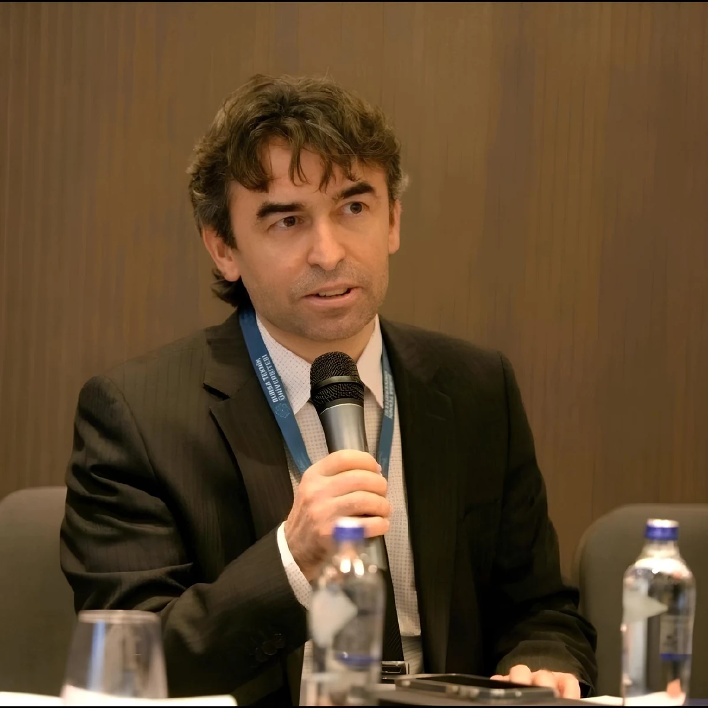
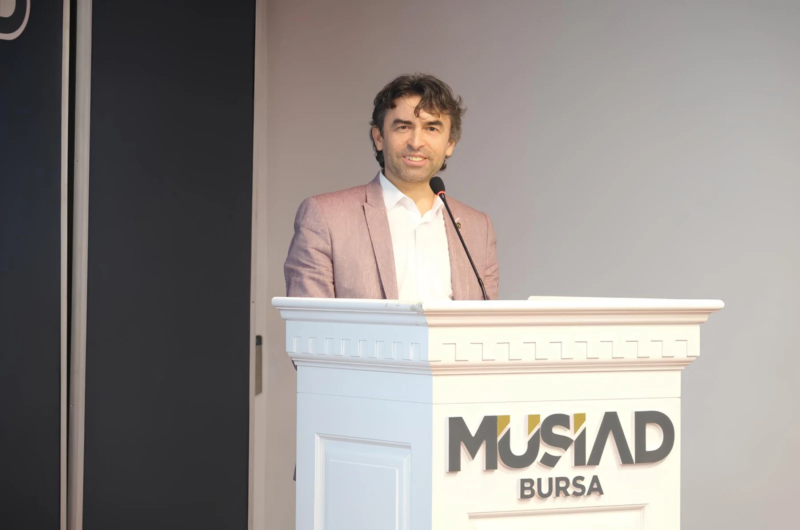

AKADEMİ · KARİYER · TEKNOLOJİ
“Bilgiyi değere dönüştürmenin yolu akademi ile sanayiyi aynı vizyonda buluşturmaktan geçer.”
Doç. Dr. Hasan Şahin
Endüstri Mühendisliği

HAKKINDA
Bilginin gücüne.
Birlikte üretmeye.
Akademi ile iş dünyasını buluşturan çok yönlü bir yaklaşım.
Bursa Teknik Üniversitesi Endüstri Mühendisliği Bölümü’nde öğretim üyesi olarak çalışmalarını sürdüren Doç. Dr. Hasan Şahin; araştırma, kariyer gelişimi ve yazılım girişimciliğini ortak bir vizyonda bir araya getiriyor.
BUKAGEM müdürlüğü ve SKYTR Yazılım Yönetim Kurulu Başkanlığı görevleriyle akademik bilgi birikimini öğrenciler, mezunlar ve iş dünyasıyla buluşturuyor.
Akademik özgeçmiş ve profil01 / AKADEMİK ÇALIŞMALAR
Araştırmadan
gerçek dünyaya.
Endüstri mühendisliğinin analitik yaklaşımıyla üretim, yönetim ve teknoloji odağında çalışmalar.
Google Scholar’da tüm yayınlar01Tedarik zinciri & lojistik
Tedarik zinciri ve lojistik yönetiminde karar süreçleri, kaynakların etkin kullanımı ve sistemlerin analizi.
TEDARİK ZİNCİRİ / LOJİSTİK YÖNETİMİ02Endüstri 4.0 & dijital dönüşüm
Üretim ve hizmet sistemlerinde dijital teknolojilerin kullanımı ve dönüşümün yönetim süreçlerine etkisi.
DİJİTALLEŞME / ÜRETİM SİSTEMLERİ03Yapay zekâ & makine öğrenmesi
Veriden bilgi üretmek ve karmaşık problemlerin çözümünü desteklemek için yapay zekâ ve makine öğrenmesi yaklaşımları.
VERİ ANALİZİ / KARAR DESTEĞİ04Kalite & süreç yönetimi
Kalite kontrol ve toplam kalite yönetimi çerçevesinde süreçlerin değerlendirilmesi ve sürekli iyileştirme.
KALİTE KONTROL / TOPLAM KALİTE YÖNETİMİ02 / BUKAGEM
Potansiyelden
geleceğe bir köprü.
Kariyer Gelişimi Uygulama ve Araştırma Merkezi Müdürü
Öğrenciler, mezunlar ve iş dünyası arasında kurulan bağlar, kariyer yolculuğunun önemli bir parçası. BUKAGEM çatısı altında bu bağların gelişmesine katkı sunan çalışmalar.
- 01 Öğrenci ve mezunların kariyer gelişimi
- 02 Mentörlük ve deneyim paylaşımı
- 03 Üniversite–sanayi iş birliği

03 / YAZILIM & GİRİŞİMCİLİK
Akademik birikim.
Teknolojik bakış.
SKYTR Yazılım Yönetim Kurulu Başkanı olarak akademik bilgi ile iş dünyasının ihtiyaçlarını aynı zeminde buluşturan bir yaklaşım.
İş birliği için iletişime geçinBilgi. Teknoloji. Değer.
İLETİŞİM
Birlikte neler
üretebiliriz?
Akademik iş birlikleri, konuşmacı davetleri
ve yeni fikirler için iletişime geçin.
Bursa Teknik Üniversitesi
Mimar Sinan Yerleşkesi, G Blok / 412
Yıldırım / Bursa